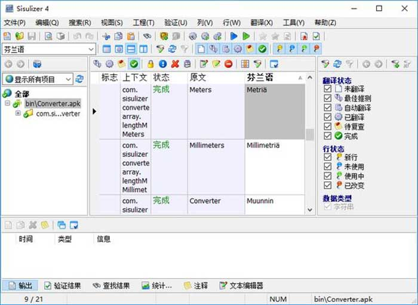

汉化工具，扫描，翻译软件，Sisulizer Enterprise Edition - 美少女cc | msncc
介紹

sisulizer 4是目前网络上最优秀的一个软件汉化工具，全称为Sisulizer Enterprise Edition。它能够将英文软件汉化成中文，
同时支持其他外语软件汉化成中文软件。另外该sisulizer方便地为你的软件提供多种语言支持，三个步骤进行本地化：扫描应用程序和定位文本；使用Sisulizer可视化编辑工具翻译文本；创建本地化软件版本。
sisulizer 4功能介绍
-用户只需简单的三步即可完成本地化工作：扫描，翻译以及创建
-瞬间完成本地化更新。用户只需点击"Scan for Changes"按钮，Sisulizer即可显示所有的新的，改变的，或者移除掉的字符串，并且能自动的对既有翻译内容进行重用。能极大的节省日常开支以及翻译成本。
-能对诸如可执行文件或者dll文件之类的二进制文件进行本地化。无需提供源代码。
-安全性保障。Sisulizer为二进制文件生成本地化版本，而无需对您的原始工程文件作任何修改。
-能翻译为任何人类语言，包括阿拉伯语，中文，希腊语，希伯来语，日语，韩语以及任何用户自定义语言。
-可翻译为可视化文本（所见即所得）。所以所有用户都可对之进行翻译，包括您，您的翻译，或者身在其他国家的合作者，您再也无需被他们带着无尽的问题轰炸了。
-再也无需再次翻译了。Sisulizer能自动记住您曾做过的所有翻译，这极大的节省了时间与金钱。
-能本地化所有的Windows的APP，包括一些当下流行的语言诸如，C/C++, Delphi, Java, 和 VB6, plus Qt, gnuGetText,以及一些Ini文件，比如Pocket PC等。
-用户可以在工程文件处于任何状态（alpha, beta,发布, 较小升级或重大更新）时即对之进行本地化。减少了您用于市场推广的时间以及能更快的使得资金回流。
专业化功能
完全支持.NET应用程序。可本地化C#，VB.NET Winforms, Silverlight以及WPF应用程序。其还支持ResX以及二进制资源库进行本地化。
-在原工程中翻译帮助文件。对翻译记录的共享加快了工作进度，减少了该过程中与翻译软件的通讯，时间与经济上均能大幅节省。
-支持本地化的主要格式：本地数据库，HTML，XML文件。
-除了内置的翻译内存以外，其还能与您的翻译软件进行翻译记录交换。
-适用于多种语言的实时的拼写检测器能帮助找出翻译文本以及原始文本中的错误。
-其有着强大用于翻译验证的QA功能，能帮助解决一些翻译过程中的一般性错误，诸如忘记的菜单快捷方式，错误的占位符数目，甚至一些在翻译过程中尚未发生的错误。
-其报表与统计功能使得用户能实时掌握本地化的状态与进度。
企业级功能
拥有帮助将Sisulizer集成入创建过程的命令行工具。
-拥有用ASP，JAP和PHP语言编写的Web应用程序本地化功能
-本地化服务器数据库
-可使用基于服务器的翻译记忆功能
-可使用了机器翻译引擎
End
Other .. 解壓: msncc 美少女cc
學習、資訊、 或資源分享,如有失效的,請留言
更多下載通道正在更新....
資源收集于網絡,僅供學習研究,製作不易,若是喜歡,請考慮補上正版,再體驗離綫暢玩。
可到官網或其他平臺 搜索購買